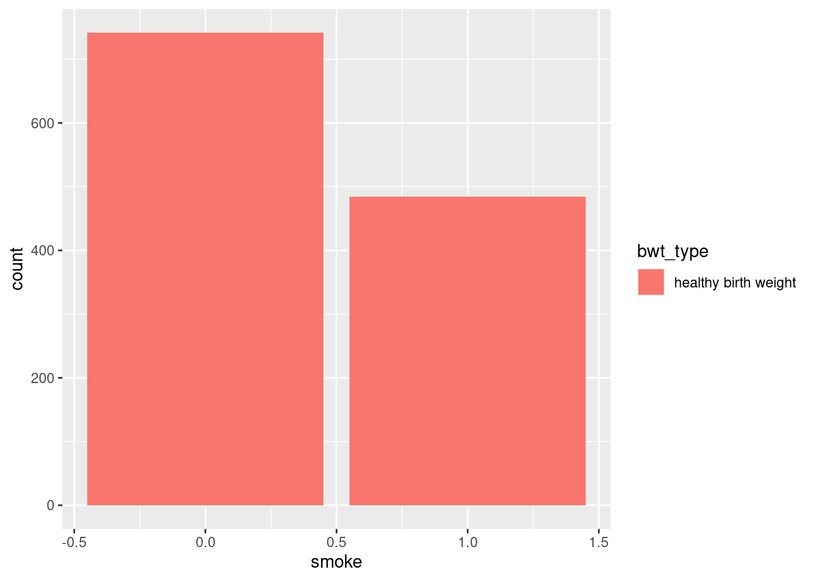
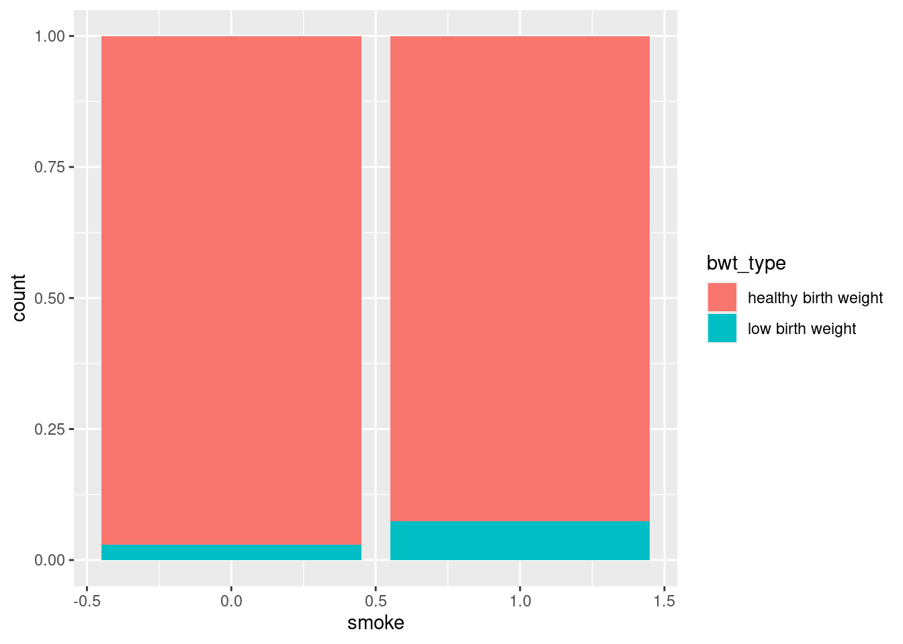

── Attaching core tidyverse packages ──────────────────────── tidyverse 2.0.0 ──
✔ dplyr 1.1.4 ✔ readr 2.1.5
✔ forcats 1.0.0 ✔ stringr 1.5.1
✔ ggplot2 3.5.1 ✔ tibble 3.2.1
✔ lubridate 1.9.3 ✔ tidyr 1.3.1
✔ purrr 1.0.2
── Conflicts ────────────────────────────────────────── tidyverse_conflicts() ──
✖ dplyr::filter() masks stats::filter()
✖ dplyr::lag() masks stats::lag()
ℹ Use the conflicted package (<http://conflicted.r-lib.org/>) to force all conflicts to become errors
Loading required package: airports
Loading required package: cherryblossom
Loading required package: usdataDigestion Day
Tons of Vocab:
Population
- Parameter \(\mu\)
Sample
- Statistic \(\bar{x}\)
Variable types (numeric, categorical)
Observational Study vs Experiments
Methods of Sampling
Simple Random
Cluster
Stratified
Convience <- Don’t do this one in real life.
Some R Code
ggplot(data= , aes(x,y)) |> geom_point()- This makes a point plot
present |> mutate(total = x + y)- This adds a cloumn
present |> arrange(desc(total))- This arranges the total colum in descending order.
$and?- Pulls a column out of a df and get the help menu respectively
Tutorial R things
hsb2 |> count(schtyp)hsb2_public <- hsb2 |> filter(schtyp == "public")if_else()andcase_when()functionsgroup_by()numeric variables are <int> and <dbl>
categorical variables are <fct> and <chr>
Live coding example
Load tidyverse and openintro
Consider the babies df
Don’t ruin the surprise
If you click the next slide you will see the code I hope to do.
Code I hope to do:
babies
babies_lbw <- babies |>
mutate(bwt_type=
case_when(
bwt < 3.23 ~ "very low birth weight",
bwt > 3.23 & bwt < 5.5 ~ "low birth weight",
bwt >= 5.5 ~ "healthy birth weight"
)
)
babies_lbw# A tibble: 1,236 × 9
case bwt gestation parity age height weight smoke bwt_type
<int> <int> <int> <int> <int> <int> <int> <int> <chr>
1 1 120 284 0 27 62 100 0 healthy birth weight
2 2 113 282 0 33 64 135 0 healthy birth weight
3 3 128 279 0 28 64 115 1 healthy birth weight
4 4 123 NA 0 36 69 190 0 healthy birth weight
5 5 108 282 0 23 67 125 1 healthy birth weight
6 6 136 286 0 25 62 93 0 healthy birth weight
7 7 138 244 0 33 62 178 0 healthy birth weight
8 8 132 245 0 23 65 140 0 healthy birth weight
9 9 120 289 0 25 62 125 0 healthy birth weight
10 10 143 299 0 30 66 136 1 healthy birth weight
# ℹ 1,226 more rowsbargraph?
babies_lbw |>
ggplot(aes(x=smoke)) +
geom_bar(aes(fill=bwt_type))Warning: Removed 10 rows containing non-finite outside the scale range
(`stat_count()`).
count
babies_lbw |>
count(bwt)# A tibble: 107 × 2
bwt n
<int> <int>
1 55 1
2 58 1
3 62 1
4 63 1
5 65 2
6 68 1
7 69 1
8 71 5
9 72 2
10 73 1
# ℹ 97 more rowsTake 2
babies_lbw <- babies |>
mutate(bwt_type=
case_when(
bwt < 3.23*16 ~ "very low birth weight",
bwt > 3.23*16 & bwt < 5.5*16 ~ "low birth weight",
bwt >= 5.5*16 ~ "healthy birth weight"
)
)
# Numbers are multiplied by 16 to give ounces from poundsnew bargraph
babies_lbw |>
ggplot(aes(x=smoke)) +
geom_bar(aes(fill=bwt_type), position = "fill")Warning: Removed 10 rows containing non-finite outside the scale range
(`stat_count()`).